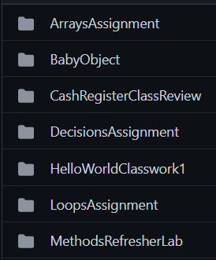
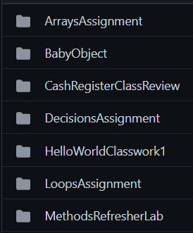

Java Programs
Collection of Java projects that covers arrays, loops, classes, etc
You can click the title of project to be taken to the repo
Collection of Java projects that covers arrays, loops, classes, etc
Utilize object oriented programming and previous methods learned in order to create a tic tac toe game of 3 - 10 players